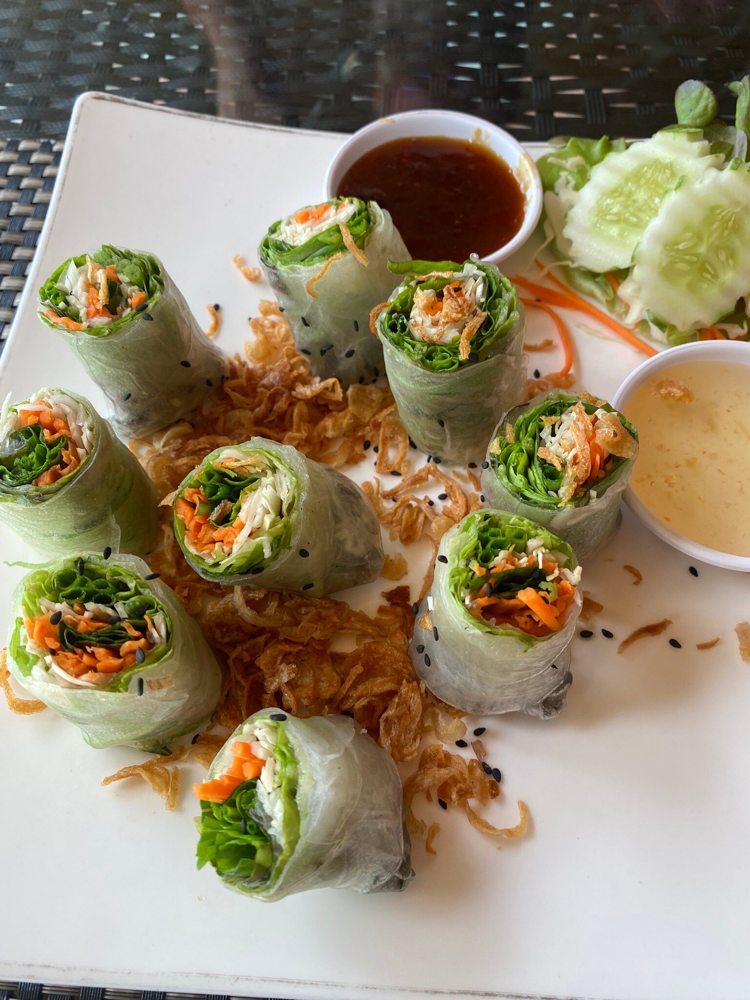
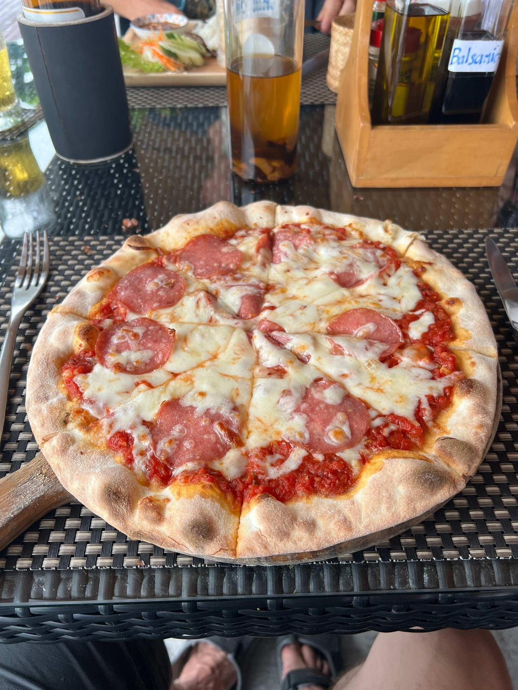
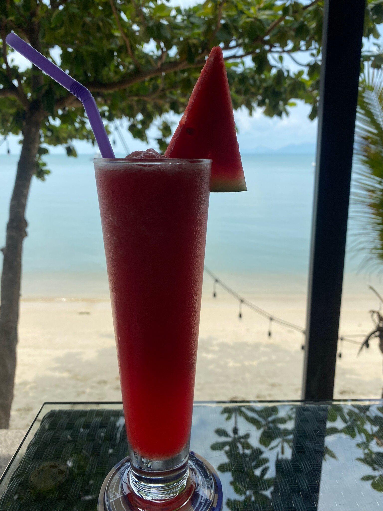

Menu · เมนู
อาหารไทย อาหารยุโรป พิซซ่า และเครื่องดื่ม
Breakfast from 9am, lunch, sunset dinner and drinks until late. Ask us to make any dish milder.



Highlights
Draft note: this page shows real dishes from Yui’s photos and guest reviews. Send us your full menu and prices and we’ll add them here, in English and Thai.
Tonight’s sunset is free
จองโต๊ะริมทะเล โทร 088 301 9153